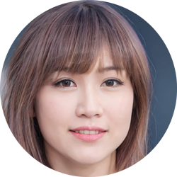

Non-Player Characters
Alina
An attractive red-headed woman who strives for a sense of aloofness and charm.
She ensures that all of her patrons, and employees, are well cared for.
She is the owner of Alina's House of Pleasures.
Billy Turner
A young man with a mischevious grin.
He can often be found in Casino "repairing" slot machines.
He is also the unofficial Blackjack Dealer for the Casino.
Bob Levine
Owner of Bob's General Surplus Store.
A frumpy old man with a grumpy attitude. He has no issues haggling, but once you get on his badside, he'll not budge.
A company man through and through, he prefers to only take Seegbills.
Gary Butler
Owner of the Get Inked tattoo shop.
He loves to flirt with any of the beautiful woman around.
For some reason he seems to have a distaste for Alina.
Jason V. Hees
Owner of the Rugged Outfitters clothing shop and the USCMC Surplus Store.
He is a very reserved and quiet individual.
Not many people have gotten him to open up, and as such his background is shrouded in mystery.
Jo Anderson
Runs Anderson's Bar and Grill.
She's a fairly jovial person to spend time around.
Despite constantly giving out free drinks and meals, she manages to turn a profit.
Ruthanne Lee
Owner of Lee's Liquor and Smoke Shop.
She's a very pleasant person to interact with, always greeting customers with a warm smile and "howdy ya'll."
She's hinted at something she calls her "secret sauce," what could it be?

Vixen
By day, Vixen runs the Hair and Nail Salon.
By "night", she is an "employee" at Alina's House of Pleasures.